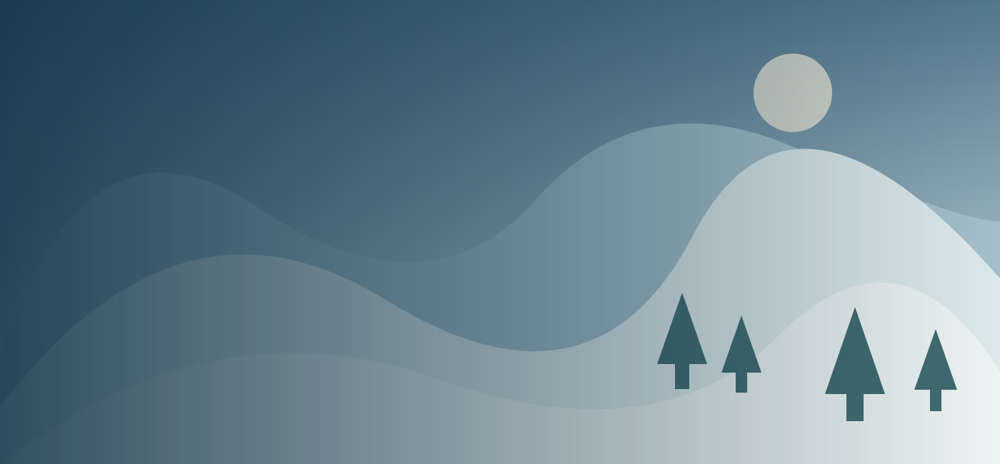
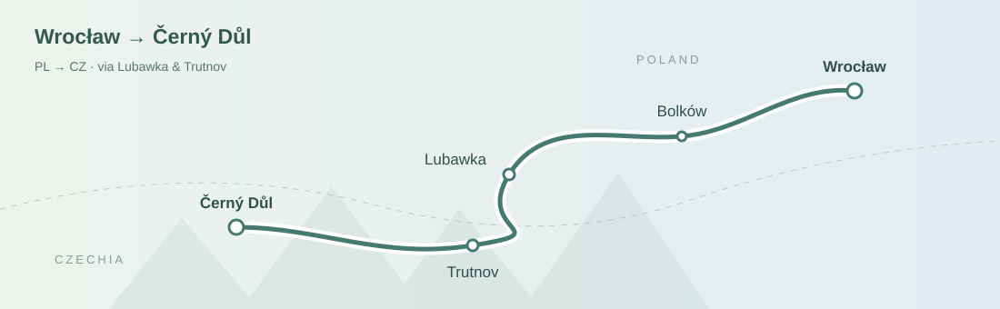

Drive from Wrocław, check in and organise equipment. An introductory lesson only if arrival time allows.

CZECHIA · GIANT MOUNTAINS · WINTER
Černý Důl.
A long weekend.
Time for the first turns.
4 days / 3 nightsThu–Sun · nights to confirm
5 travellersLikely 4 skiing, 1 not skiing
From WrocławOne car · route to choose
Learning firstTwo nieces starting out
01 / WINTER IN CZECHIA
Small steps. A shared winter escape.
A four-day trip focused on helping two nieces learn to ski, with time to explore gentle runs when they are ready. Černý Důl is the base under consideration; no accommodation or lessons have been booked.
Working dates chosen for this draft: Thursday 11 to Sunday 14 February 2027. Dates may change. Three nights and three ski days are planning assumptions, not confirmed commitments.
02 / WINTER IN CZECHIA
Four days, with room to learn.
Main learning day. Book a suitable shared lesson for the nieces; keep breaks flexible.
Practise and build confidence. Move beyond the teaching area only when the instructor considers it appropriate.
Check out and return home. Morning skiing is an option, not a fixed plan; agree equipment return and luggage storage.
The order of lessons is still open. The earlier budget assumed three ski days, which requires some skiing on an arrival or departure day. Two full days are currently the firmest part of the outline.
03 / WINTER IN CZECHIA
A gentle start in the Giant Mountains.
LIVE park
Start in the teaching area near Family Express. The official resort describes gentle, wide slopes, two chairlifts and an on-site school and rental.
Two learners, together
Working lesson model: four instructor hours shared by both nieces, such as two hours on each of two days. Confirm ages, ability, teaching language and whether shared tuition is suitable.
Simple runs, when ready
Keep the first progression in the same sector. No specific blue run or day of progression has been selected. Choose with the instructor and current piste status.
Exact ages are not known. The nieces were described as older, but adult ski-pass or lesson categories have not been established.
04 / ČERNÝ DŮL
The slopes we care about.
A clean vector schematic based on the operator’s route contours. Blue, red and mixed runs keep their original classifications. Dashed grey lines show lifts; green marks the teaching area. Switch highlights below.
Green is our learning-area highlight, not a newly assigned green piste rating. LIVE park is listed as blue by the operator; green lift symbols on the panorama denote lifts, not beginner runs. Red runs are not the first step for beginners.
Start here
LIVE park 8c · 130 m; Veronika 7c · 170 m. Agree the suitable learning area and progression with the instructor.
Blue options
Holandská 6c · 1,400 m; Bönischovy Boudy 5c · 600 m. Blue classification alone does not guarantee suitability for a first lesson.
For more confident skiers
Špičák 2 (2c) · 1,050 m; U lomu 1 (3c) and U lomu 2 (4c) · 1,200 m each. Ford Špičák 1c and Vyhlídková 9c have mixed blue/red classification.
© SkiResort ČERNÁ HORA – PEC / Holidayinfo. Route geometry: official SkiResort / Holidayinfo map, retrieved 1 November 2026. Travels vector design; hills and woodland schematically follow the original panorama, not surveyed terrain. Not to scale; no live opening status.
05 / WINTER IN CZECHIA
One car, five travellers

Allow about 2½–3 hours each way in winterIllustrative route via Lubawka and Trutnov, not a navigation trace. Breaks are extra: with a 15-minute stop, allow about 2¾–3¼ hours. Check the actual route and vignette requirements before departure.
Open in Google Maps ↗One car, five travellers
Wrocław → Černý Důl. The handover suggests roughly 2½–3 hours each way in winter, before breaks. This is an earlier planning estimate, not a verified address-to-address route. Mileage, stops, fuel costs and any vignette are still open.
Choose a driving route ↗Parking & daily logistics
The official resort page currently states that resort parking is free. Accommodation parking depends on the property. Happy Hill options need a short drive; distances from one house must not be assumed for every house.
Zieleniec + Černý Důl was discussed as an alternative, but is not part of this draft. There is no confirmed intermediate stop.
06 / WINTER IN CZECHIA
A shared living room. Space for five.
Five travellers, two–three bedrooms and a shared living room. Ten candidates in two provisional price groups; availability for 11–14 February 2027 is unconfirmed. Weekend, nightly and weekly tariffs below have different terms. Euro conversions use €1 = 25 Kč.
Lower cost
Bolkov · Rudník
Pod Černou 5
2 bedrooms · living room + kitchen · fifth guest on an extra bed.
€100 (2 500 Kč) / nightPublished reference · availability unconfirmed
Two-night minimum; weekend €240 (6 000 Kč). A three-night total needs a quote. Electricity and local tax extra; linen included.
Černý Důl 5
Apartmán AVIATIK
2 bedrooms · separate living room + kitchen · one parking space.
≈€420 (10 500 Kč) / 3 nightsPublished reference · availability unconfirmed
Five-person calculation: €140 (3 500 Kč)/night. Two-night minimum, local tax included. Published tariff effective from 2023; confirm 2027 rate and extras.
Čistá · Happy Hill
Chalupa U Mariky
3 bedrooms · separate living room + kitchen · two parking spaces.
≈€344 (8 591 Kč) / weekendPublished reference · availability unconfirmed
2027 winter tariff; minimum two nights. Three-night price needs a quote: the earlier weekly-rate calculation was not a short-stay offer. Energy and local tax extra; refundable deposit €200 (5 000 Kč).
Čistá · Happy Hill
Vila v Krkonoších
3 double bedrooms · living room + kitchen · parking.
€240 (6 000 Kč) / weekendPublished reference · availability unconfirmed
Two-night minimum. Ask for Thursday–Sunday and the exact villa/address. Energy, linen and cleaning included in the published tariff; local tax extra. February 2027 price unconfirmed.
Čistá · Happy Hill
Bonites · chata Krkonoše
3 bedrooms · living room + kitchen · two parking spaces.
€112 (2 800 Kč) / nightPublished reference · availability unconfirmed
Conditional reserve: published 2026 winter rules require five nights, so it does not fit our three-night draft unless the host makes an exception. Energy and cleaning included; confirm 2027 terms.
Mid-range
Čistá · Happy Hill
Chata Aperolka
3 bedrooms · living room + kitchen · two parking spaces.
≈€480–540 (12 000–13 500 Kč) / 3 nightsPublished reference · availability unconfirmed
Two-night minimum. Weekdays €140 (3 500 Kč), weekend nights €200 (5 000 Kč); confirm how Thursday–Sunday is charged. Energy, linen and cleaning included; local tax extra. Deposit €160 (4 000 Kč).
Černý Důl · Chata Alfa
Apartmán Alfa 11
2 bedrooms · living room + kitchen · next to the ski area.
€640 (16 000 Kč) / 3 nightsPublished reference · availability unconfirmed
Historical 2025/26 winter package, not a confirmed 2027 price. The working link now opens the owner’s tariff. That tariff includes energy and local fees; ask for 11–14 February and cancellation terms.
Černý Důl · Slunečná louka
Apartmány Pampeliška · 3+kk
Choose the larger 3+kk apartment with two bedrooms and a living room; confirm beds for all five.
€160 (4 000 Kč) / nightPublished reference · availability unconfirmed
Conditional reserve: the price table allows three winter nights, but the description says seven. February has its own holiday season. Confirm minimum stay, five-person rate and cleaning before considering it suitable.
Čistá · Happy Hill
Happy Hill 32
3 double bedrooms · separate living room + kitchen · sleeps six.
Three-night quote requiredPublished reference · availability unconfirmed
Conditional reserve: published winter reference €960 (24 000 Kč) per week. This is not a three-night price. Confirm the exact dates, minimum stay, full fees and parking with the booking provider.
Bolkov · Rudník
Chalupa MausHaus
3 bedrooms · separate living room + kitchen · parking.
Three-night quote requiredPublished reference · availability unconfirmed
Conditional reserve: published winter reference €796 (19 900 Kč)/week. Short-stay terms and February 2027 total are unconfirmed; do not divide the weekly price into a bookable nightly rate.
Start with Pod Černou 5, AVIATIK, U Mariky, Vila v Krkonoších and Aperolka for a short-stay enquiry. The conditional reserves need minimum-stay approval or a specific quote; their placement in a price group is provisional. No accommodation has been booked.
07 / WINTER IN CZECHIA
A winter break beyond the pistes.
Ideas for the likely non-skier and time together. Winter hours, admission and transport have not yet been checked; these are possibilities rather than bookings.
Černý Důl
A village stroll and, if open, Muzeum Podzemí Krkonoš. Start with something close to the accommodation.
Janské Lázně
A spa-town walk, the Krkonoše treetop walkway or the aquacentre. Confirm winter opening and access before choosing the day.
Vrchlabí
A nearby-town outing and a possible indoor-pool alternative for poor weather. The detailed programme is still open.
The outdoor Happy Hill pool is seasonal: do not include it in the winter plan. Sněžka and Dvůr Králové Safari Park remain optional ideas requiring separate winter checks.
Food is undecided. Breakfast at home and simple meals out were an early budgeting model, not an agreed dining plan. Restaurace Pošta, Pizzerie Garden and Restaurace Čistá were mentioned but not selected.
08 / WINTER IN CZECHIA
A starting estimate, not a quote.
Historical estimate for five travellers, three nights and four people skiing for three days. Prices are for the whole group: euros first, Czech crowns in brackets. The original PLN estimates use the historical planning rates €1 = 4.3768 PLN and €1 = 25 Kč; figures are rounded independently. This is a currency conversion, not a new price check for 11–14 February.
| Accommodation · replace with chosen property | ≈€343–548 (8,568–13,709 Kč) |
| Ski passes · 4 × 3 days | ≈€503–685 (12,566–17,136 Kč) |
| Rental · assumed 4 full sets × 3 days | ≈€206–297 (5,141–7,426 Kč) |
| Instructor · 4 shared hours for two nieces | ≈€228–343 (5,712–8,568 Kč) |
| Food · 5 people × 4 days | ≈€274–388 (6,854–9,710 Kč) |
| Car, parking & fees · mixed reserve to split | ≈€103–194 (2,570–4,855 Kč) |
Sum of the earlier estimate≈€1,656–2,456 (41,412–61,403 Kč)
Not a current all-in price. Activities are unpriced, not free. Refundable deposits are separate cash requirements. Do not add a selected apartment cost on top of the accommodation allowance.
Choose the right ski pass first
Compare local Černý Důl and teaching-area tickets with a resort-wide pass after confirming ages and ski days. The handover mentioned a 2026/27 Flexiskipas at €50 (1,250 Kč) per adult/day: 4 × 3 days would be €600 (15,000 Kč). This historical reference is not a verified current offer or necessarily the cheapest option for beginners.
Operator prices & ticket shop ↗Equipment & lessons still to specify
The early rental estimate assumed skis, boots, poles and helmets for all four skiers. Actual own equipment is unknown. Four instructor hours are shared between the nieces, not four private hours each. Confirm teaching language, ages, shared tuition and any teaching-lift charge.
09 / WINTER IN CZECHIA
Before the first turn.
Checks are saved only in this browser.
10 / WINTER IN CZECHIA
Keep the useful things close.
Based on the supplied planning handover dated 1 November 2026. Housing sources rechecked on 1 November; each card links its source and distinguishes historical, general and conditional tariffs. Exact-date availability and final prices require confirmation.